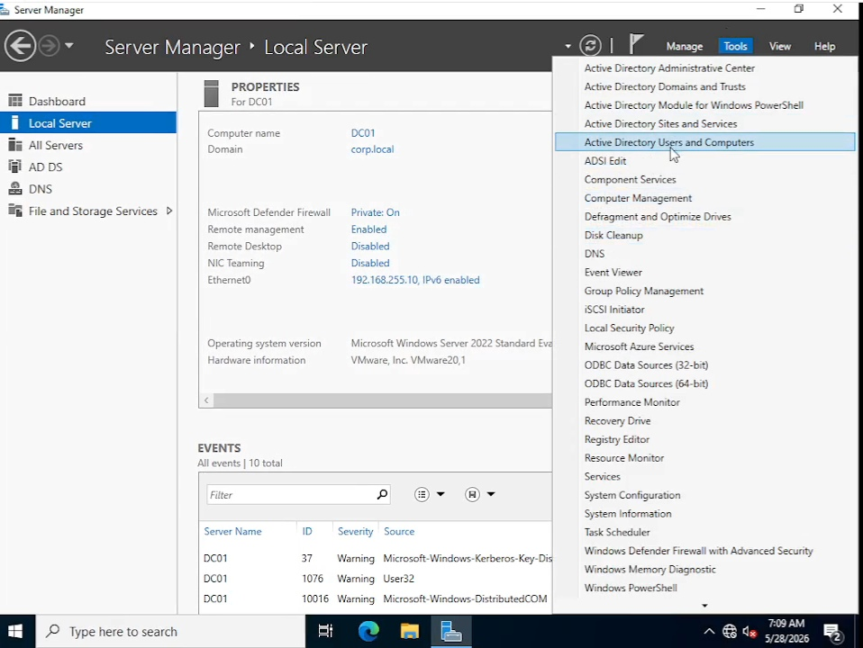
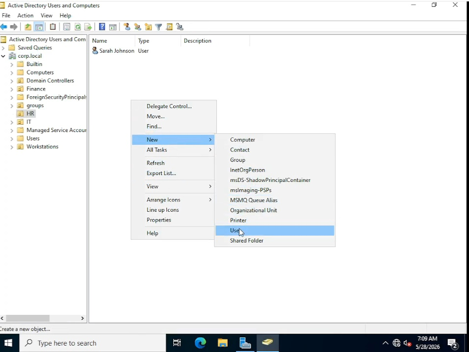
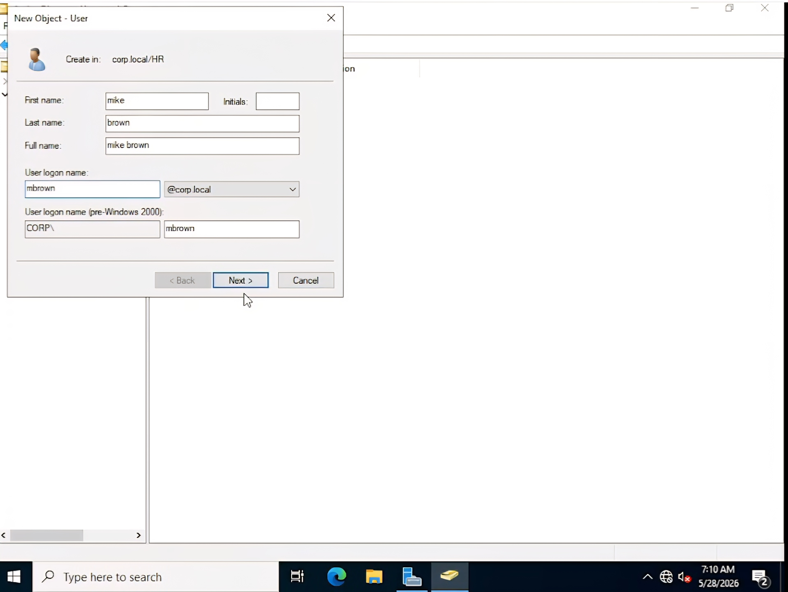
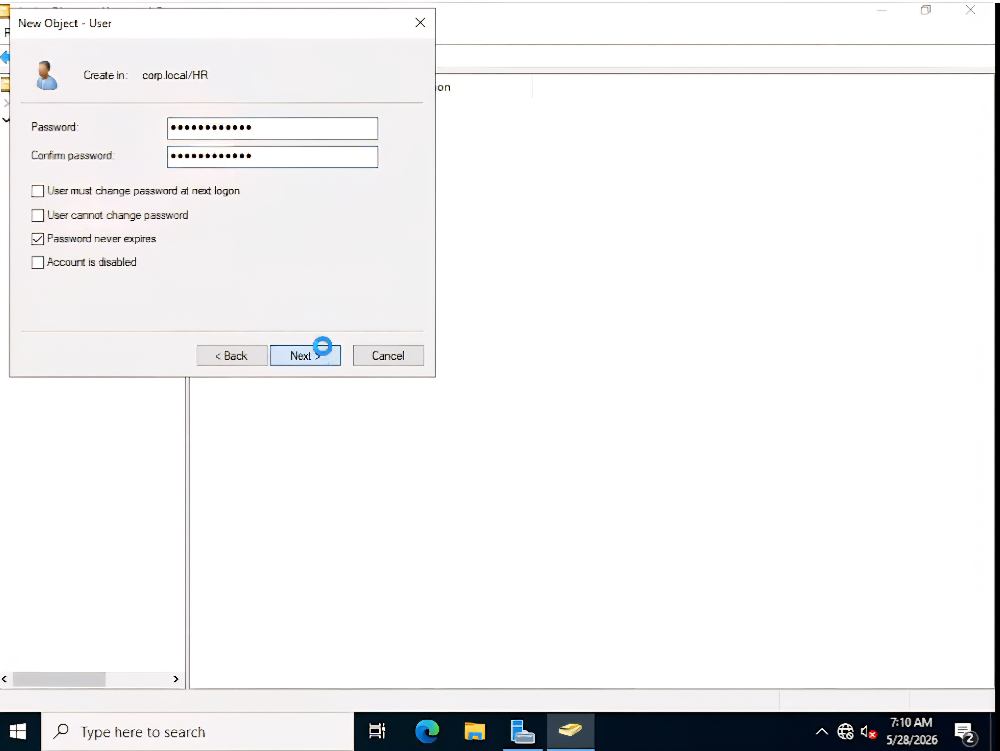
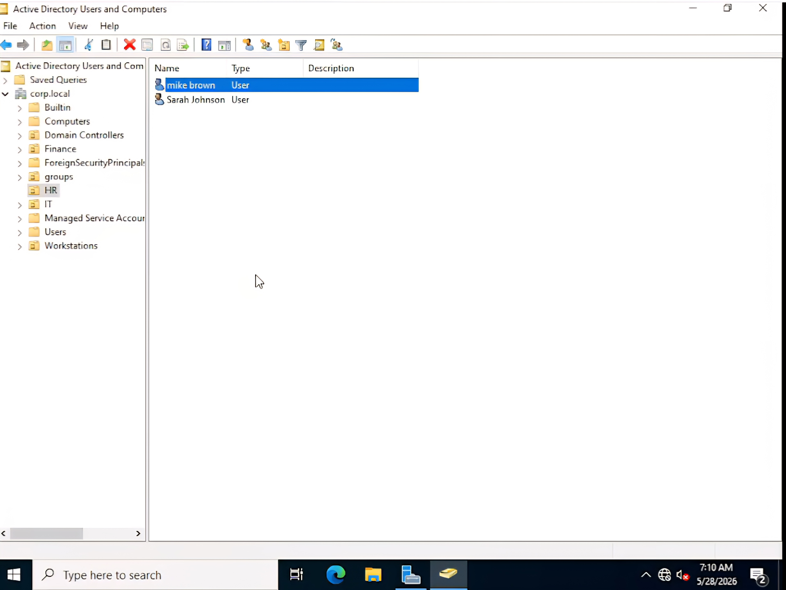
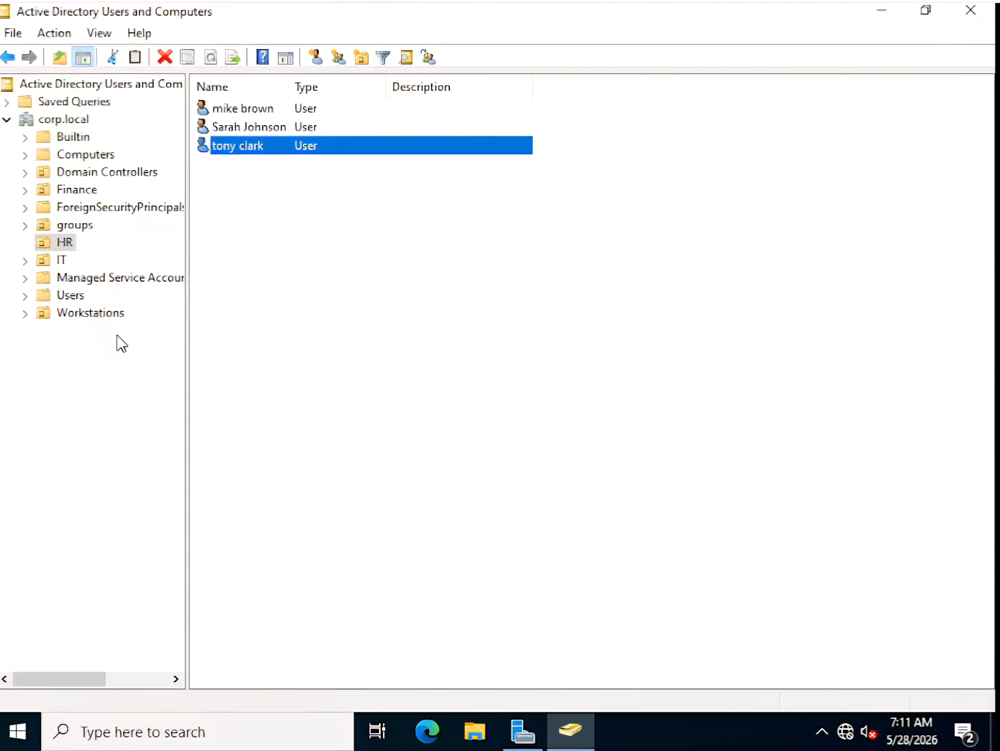

This lab demonstrates the process of creating and configuring user accounts within Active Directory Domain Services (AD DS) using Windows Server 2022. User accounts were created within departmental Organizational Units (OUs), configured with appropriate password settings, and verified to ensure successful deployment in a domain environment.
The following video demonstrates the complete process of creating user accounts within Active Directory Users and Computers, configuring password settings, and verifying successful account creation.
Launch the Active Directory Users and Computers management console (ADUC), the primary tool used to administer users, groups, computers, and Organizational Units within an Active Directory domain.

Navigate to the appropriate Organizational Unit, right-click, and select New → User to begin the New Object - User wizard.

Enter the user's details including their name, logon name, and User Principal Name (UPN). These values uniquely identify the account within the Active Directory domain.

Assign an initial password and configure the required account options, such as requiring a password change at next logon or setting the password to never expire, depending on organizational policy.

Complete the wizard and verify that the new account appears within the selected Organizational Unit, confirming that the user has been successfully created.

The completed Organizational Unit now contains multiple user accounts, demonstrating successful deployment and organization of domain users within the Active Directory environment.

This lab demonstrates practical experience creating and configuring user accounts within an Active Directory domain. These administrative tasks are fundamental responsibilities of IT Support Technicians and Systems Administrators in enterprise Windows environments.